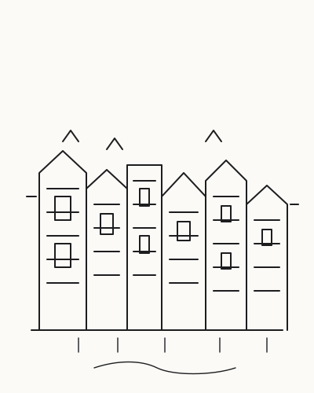
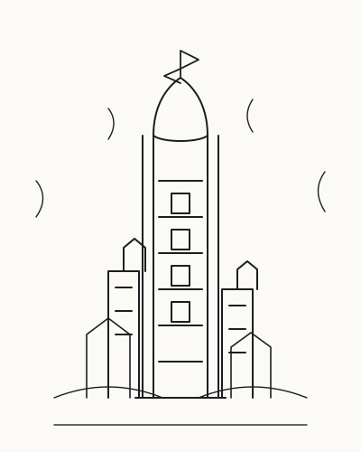

Prints & originelen
Een selectie van mijn tekeningen is verkrijgbaar als fijne art print, en regelmatig gaan ook originelen naar nieuwe eigenaren. Stuur me een bericht voor actuele beschikbaarheid en prijzen.
Vraag naar printsLijnkunst · Woerden
Gebouwen met karakter en plaatsen die alleen in de verbeelding bestaan — getekend met pen en inkt.

Ik breng architectuur tot leven met pen en inkt — van verborgen parels in Woerden en daarbuiten tot wonderlijke werelddelen die alleen op papier bestaan. Elke lijn is een uitnodiging om langer te kijken.
Uitgelicht
In de geest van de zeventiende-eeuwse capriccio combineer ik bestaande architectuur met verzonnen constructies tot één fantastisch tafereel: een kerktoren uit Woerden die uitkomt op een zwevende stad, een brug die nergens naartoe leidt en toch precies goed is. Gewoonlijk ontstaat zo'n tekening laag voor laag, over vele weken, met fineliner en inkt.
Meer werk bekijken
Galerij
Een selectie van inkttekeningen — architectuurportretten en fantasielanden. Volg het tekentafel-proces op Instagram.
Tekentafel
Werk in wording, details en processen — volg @r.os_art voor alles wat vers verschijnt.
Over mij
Hoi! Ik ben Rens, tekenaar en architect, geboren en getogen in Woerden. Mijn hart klopt voor de stad en haar geveltjes: grachten, torens, poorten — maar elk gebouw met een verhaal trekt me aan, van schuur tot kathedraal.
Naast bestaande architectuur teken ik fantasielanden: capriccio's waarin werelden ontstaan die er nooit zijn geweest, maar er wel hadden kunnen zijn. Mijn tekeningen groeien laag voor laag met pen en inkt, vaak tientallen uren per werk — elk blad is een kleine liefdesverklaring aan de lijn.
— Rens
Te koop
Een selectie van mijn tekeningen is verkrijgbaar als fijne art print, en regelmatig gaan ook originelen naar nieuwe eigenaren. Stuur me een bericht voor actuele beschikbaarheid en prijzen.
Vraag naar printsLaat jouw huis, favoriete gebouw of een compleet fantasielandschap in lijn vastleggen. Samen kiezen we formaat en gezichtspunt; ik neem de pen voor mijn rekening.
Bespreek een commissie